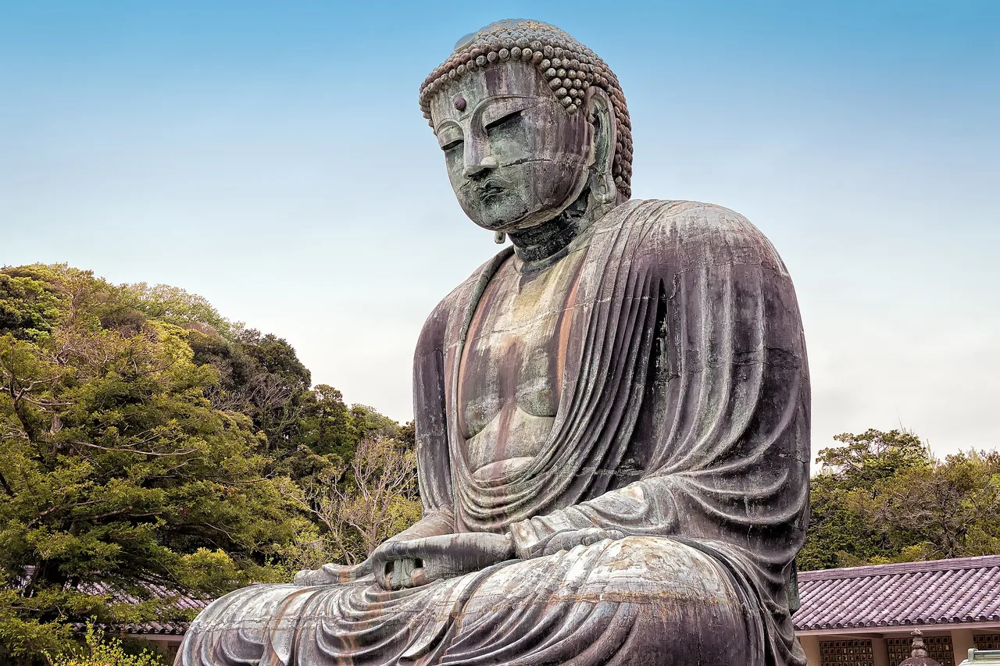

Kanagawa Panduan Wisata untuk Pelajar Bahasa Jepang
Daibutsu raksasa Kamakura, kota pelabuhan Yokohama, dan pemandian air panas Hakone.

Di selatan Tokyo, Kanagawa menawarkan kota kuil tepi laut Kamakura, Yokohama yang kosmopolitan dengan Chinatown yang besar, dan resor onsen serta pemandangan di Hakone dengan Gunung Fuji yang terlihat di hari cerah.
Yang wajib dilihat
- Daibutsu (Great Buddha) Kamakura
- Pemandian air panas Hakone dan Danau Ashi
- Yokohama Minato Mirai dan Chinatown
- Pulau Enoshima
Beberapa tautan di atas adalah tautan afiliasi. Kami mungkin mendapat komisi tanpa biaya tambahan bagi Anda. Kami hanya mencantumkan layanan yang kami pakai sendiri.
Yang wajib dicoba
Chinatown Yokohama dan shirasu (ikan teri) di dekat Enoshima.
Cara ke sana & waktu terbaik
Cara ke sana: Yokohama sekitar 30 menit, Kamakura sekitar 1 jam, Hakone sekitar 1 jam 25 menit dari Tokyo dengan kereta.
Waktu terbaik: Hari-hari musim dingin yang cerah memberikan pemandangan Gunung Fuji terbaik dari Hakone.
Hakone Free Pass mencakup perjalanan kereta, kereta kabel, dan kapal bajak laut mengelilingi Danau Ashi.
Beberapa tautan di atas adalah tautan afiliasi. Kami mungkin mendapat komisi tanpa biaya tambahan bagi Anda. Kami hanya mencantumkan layanan yang kami pakai sendiri.